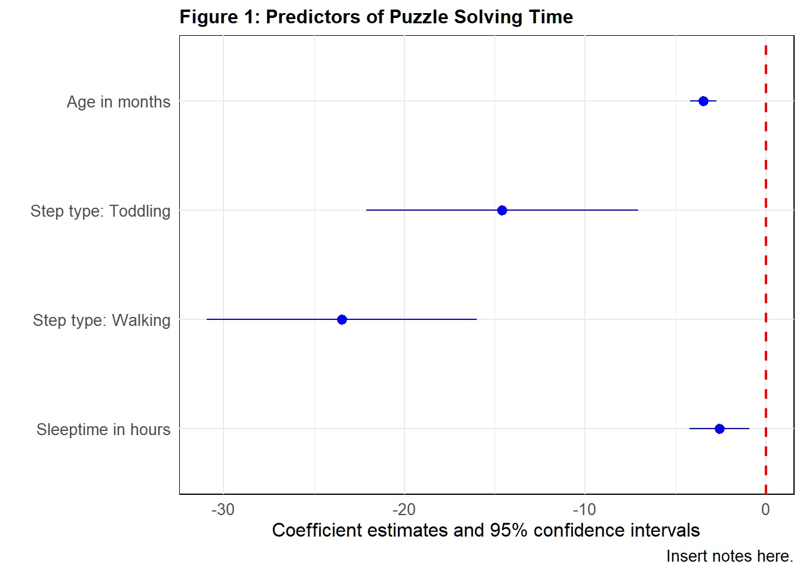
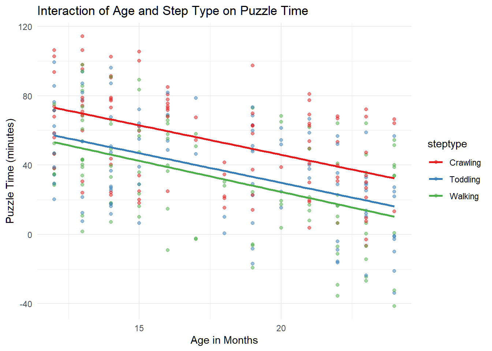
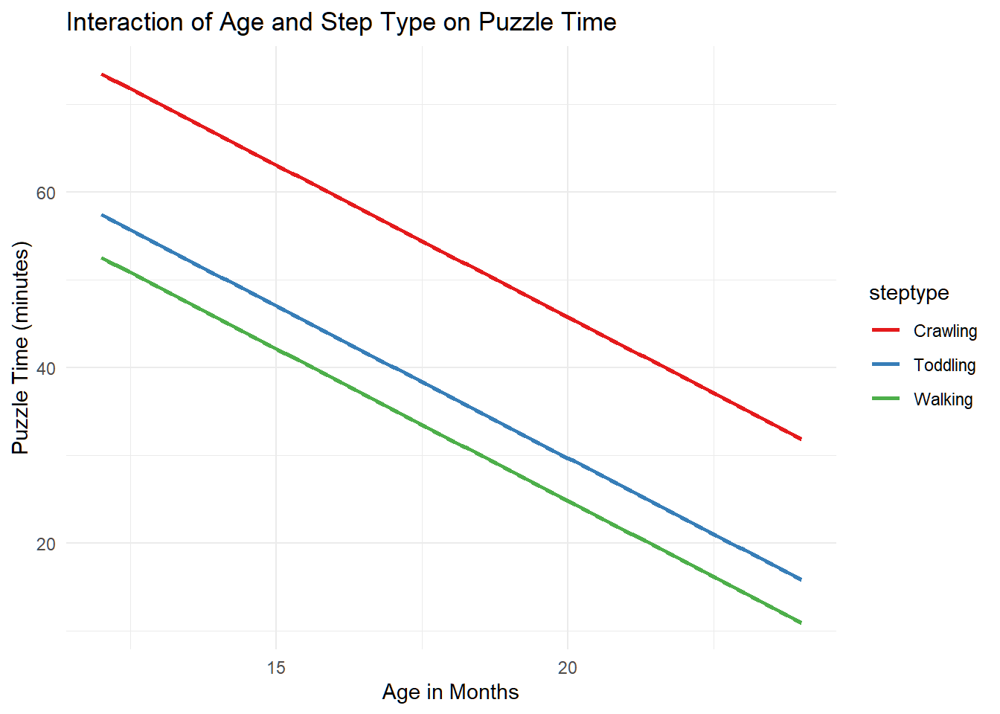

# install required packages if not already
# tidyverse for data manipulation
if (!requireNamespace("tidyverse", quietly = TRUE)) {install.packages("tidyverse")}
# modelsummary package
if (!requireNamespace("modelsummary", quietly = TRUE)) {install.packages("modelsummary")}
# flextable package
if (!requireNamespace("flextable", quietly = TRUE)) {install.packages("flextable")}
# Load the lme4 package for regression
if (!requireNamespace("lme4", quietly = TRUE)) {install.packages("lme4")}
# broom to create tidy tables
if (!requireNamespace("broom", quietly = TRUE)) {install.packages("broom")}
# Load the report to report the results
if (!requireNamespace("report", quietly = TRUE)) {install.packages("report")}
# load packages
require(tidyverse)
require(here)
require(modelsummary)
require(flextable)
require(lme4)
require(report)
require(broom)
# Download data IF NOT already available
if (!file.exists(here("01-data/processed/babysteps.csv"))) {
download.file("https://raw.githubusercontent.com/juusorepo/baby-steps-reproducible-workflow-r/main/01-data/raw/babysteps-rawdata.csv", "babysteps.csv")
}
# load the data
babysteps <- read.csv(here("01-data/processed/babysteps.csv"))
# Converting character variables to factors
babysteps <- babysteps %>% mutate_if(is.character, as.factor)
# Subset data for the baseline measurement (T1)
babysteps_T1 <- babysteps %>% filter(wave == 1)
# rename columns for better readability for outputs
babysteps_T1 <- babysteps_T1 %>%
rename(
`Age (months)` = agemonths,
`Puzzletime (sec)` = puzzletime,
`Giggle count` = gigglecount,
`Sleep (hours)` = sleephours
)Generating Reproducible Tables and Figures
This notebook shows how to create reproducible tables in R. With this, you will avoid the need for copy-pasting values from R to word processor, avoiding errors and most importantly, ensuring better reproducibility.
This tutorial is part of “Baby Steps for Reproducible Workflow in R.” If you have not followed the full tutorial, the first code chunk also downloads the example dataset.
0.1 Example data and study hypotheses
The dataset follows 100 baby participants across three observation points to monitor how their mobility type (Crawling, Toddling, Walking) affects their ability to solve puzzles and their engagement with the task, as indicated by their giggle counts. The data is simulated for planning a (fictional) study.
Suppose we want to study the following hypotheses:
H1: Learning Curve: Over time, all babies will show a decrease in PuzzleTime, reflecting the learning curve in puzzle-solving abilities, with walkers showing the steepest decline due to potentially advanced motor and cognitive integration.
H2: Enjoyment and Engagement: GiggleCount decreases less over time for crawlers and toddlers than for walkers, suggesting that while they may solve puzzles more slowly, they maintain a higher level of enjoyment and engagement throughout the learning process.
Tables to be created:
Table 1. Descriptive statistics
Table 2. Linear Regression results
Table 3. Mixed-effects model results
0.2 Load required packages and processed data
0.3 Create a descriptives table with datasummary
To create well-formatted summary table, we are using the modelsummary R package. Modelsummary provides a variety of tables and plots to summarize statistical models and data in R. For tutorials and documentation, see: https://modelsummary.com/
- First, we will use the skim_summary function to get a quick overview of the data.
- Setting “purl: false” will exclude this exploratory code chunk from the script file generated for sharing
# Print the datasummary_skim of the numeric variables
babysteps_T1 %>%
select(-wave, -babyid) %>%
datasummary_skim(type = "numeric")| Unique | Missing Pct. | Mean | SD | Min | Median | Max | ||
|---|---|---|---|---|---|---|---|---|
| Age (months) | 3 | 0 | 13.0 | 0.8 | 12.0 | 13.0 | 14.0 | ![]() |
| Sleep (hours) | 7 | 0 | 13.0 | 1.9 | 10.0 | 13.0 | 16.0 | ![]() |
| Puzzletime (sec) | 94 | 0 | 56.7 | 28.1 | 1.6 | 56.9 | 114.4 | ![]() |
| Giggle count | 38 | 0 | 22.8 | 10.8 | 1.0 | 23.5 | 48.0 | ![]() |
Next, we will build a customized summary table using datasummary and flextable.
# First we set flextable defaults to follow APA style,
# so all our tables will have the same default style
set_flextable_defaults(
font.size = 10,
font.family = "Times New Roman",
font.color = "#000000",
# table.layout = "fixed",
border.color = "grey",
background.color = "white",
padding.top = 4, padding.bottom = 4,
padding.left = 4, padding.right = 4,
height = 1.3, # line height
digits = 2,
decimal.mark = ".",
big.mark = ",", # thousands separator
na_str = "NA"
)
# The datasummary function builds a table by reference to a two-sided formula:
# the left side defines rows and the right side defines columns.
tbl <- datasummary(
`Age (months)` + `Puzzletime (sec)` + `Giggle count` + `Sleep (hours)` ~ # left side: rows
N + steptype * (Mean + SD), # right side: columns, and * for grouping
output = "flextable",
data = babysteps_T1
)
# Modifying the table, learn more: https://ardata-fr.github.io/flextable-book/
# add a spanning header row
tbl <- add_header_row(tbl,
colwidths = c(2, 2, 2, 2),
values = c("", "Crawling", "Toddling", "Walking")
)
# center align the header row
tbl <- align(tbl, i = 1, part = "header", align = "center")
tbl <- add_footer_lines(tbl, "Add notes here.")
# add a caption
# tbl <- set_caption(tbl, caption = "title-here")
# set width of the first column
tbl<- width(tbl, j = 1, width = 1.5)
# or autofit columns widths
# tbl <- autofit(tbl)
# adjust the column labels
tbl <- set_header_labels(
tbl,
"Crawling / Mean" = "Mean",
"Crawling / SD" = "SD",
"Toddling / Mean" = "Mean",
"Toddling / SD" = "SD",
"Walking / Mean" = "Mean",
"Walking / SD" = "SD"
)?(caption)
# Print a preview of the table
print(tbl, preview = "html") # preview format can be changed to: docx, rft, pptx, pdf?(caption)
a flextable object.
col_keys: ` `, `N`, `Crawling / Mean`, `Crawling / SD`, `Toddling / Mean`, `Toddling / SD`, `Walking / Mean`, `Walking / SD`
header has 2 row(s)
body has 4 row(s)
original dataset sample:
N Crawling / Mean Crawling / SD Toddling / Mean
1 Age (months) 100 13.03 0.81 13.06
2 Puzzletime (sec) 100 70.77 25.95 49.59
3 Giggle count 100 29.79 8.96 20.06
4 Sleep (hours) 100 13.12 2.03 13.69
Toddling / SD Walking / Mean Walking / SD
1 0.88 12.97 0.71
2 29.09 49.83 24.76
3 10.19 18.71 9.98
4 1.64 12.14 1.820.4 Export Table 1 to different formats
Continuing with the flextable package, you can export the table created to Word, PowerPoint, HTML, image (PNG), or PDF. The examples below will save different format to the 05-outputs/tables folder. The outputs can be shared with others or included in the final paper / presentation.
# To RTF (opens in e.g., Microsoft Word)
save_as_rtf(
"Descriptive statistics for baseline data" = tbl,
path = here("05-outputs/tables/tbl1-desc.rtf"))
# To PowerPoint
save_as_pptx(
"Descriptive statistics for baseline data" = tbl,
path = here("05-outputs/tables/tbl1-desc.pptx"))
# To HTML
save_as_html(tbl, path = here("05-outputs/tables/tbl1-desc.html"))
# To image file
save_as_image(tbl, path = here("05-outputs/tables/tbl1-desc.png"))[1] "C:/Users/juuso/OneDrive - Vaikuttava Yritys Oy/0 Oma RStudio/ReproRepo/05-outputs/tables/tbl1-desc.png"# If problems in creating image, install webshot package
# if (!requireNamespace("webshot", quietly = TRUE)) {install.packages("webshot")}
# require(webshot)0.5 Table 2. Linear regression results table with Broom and Flextable
A bit simpler example - the tidy() function from broom package enables us to make a tidy table from model results.
# Run a linear regression model
model_lm <- lm(puzzletime ~ agemonths + sleephours, data = babysteps)
# Create a tidy table from the model results
tbl_lm <- model_lm %>%
tidy(conf.int = TRUE) %>% # include confidence intervals
mutate_if(is.numeric, round, 3) # round numerics to three decimals
# Convert to flextable for customization and export
tbl_lm <- flextable(tbl_lm)
# Customize using flextable
tbl_lm <- tbl_lm %>%
# set_caption("Linear Regression Results") %>%
set_header_labels(term = "Predictor", estimate = "Estimate", std.error = "Std. Error",
statistic = "Statistic", p.value = "P value", conf.low = "CI Lower", conf.high = "CI Upper") %>%
align(align = "center", part = "all") %>%
align(align = "left", part = "header")
# Export the table to Word
save_as_rtf(
"Linear regression results" = tbl_lm,
path = here("05-outputs/tables/tbl2-lm.rtf"))?(caption)
The table is saved in the 05-outputs/tables folder. You can preview your export with the following:
# Preview table, the format can be changed to: docx, rft, pptx, pdf
print(tbl, preview = "html") a flextable object.
col_keys: ` `, `N`, `Crawling / Mean`, `Crawling / SD`, `Toddling / Mean`, `Toddling / SD`, `Walking / Mean`, `Walking / SD`
header has 2 row(s)
body has 4 row(s)
original dataset sample:
N Crawling / Mean Crawling / SD Toddling / Mean
1 Age (months) 100 13.03 0.81 13.06
2 Puzzletime (sec) 100 70.77 25.95 49.59
3 Giggle count 100 29.79 8.96 20.06
4 Sleep (hours) 100 13.12 2.03 13.69
Toddling / SD Walking / Mean Walking / SD
1 0.88 12.97 0.71
2 29.09 49.83 24.76
3 10.19 18.71 9.98
4 1.64 12.14 1.820.6 Table 3. Mixed effects model results
We run three models and presents the results in a single table. We create an APA style table for the paper and a more colorful version for presentation.
# Model 1: Basic Effect of Age
model1 <- lm(puzzletime ~ agemonths, data = babysteps)
# Model 2: Age and Mobility Type
model2 <- lm(puzzletime ~ agemonths + steptype, data = babysteps)
# Model 3: Age, Mobility Type, and Sleep Quality
model3 <- lm(puzzletime ~ agemonths + steptype + sleephours, data = babysteps)
# Add models into a list
models <- list("M1" = model1,"M2" = model2, "M3" = model3)
# Create a table with modelsummary
# Specify table title and footnote
title = ""
notes = "Insert notes here."
# Rename and/or reorder coefficients for the table
coef_map <- c(
"agemonths" = "Age in months",
"steptypeToddling" = "Step type: Toddling",
"steptypeWalking" = "Step type: Walking",
"sleephours" = "Sleeptime in hours",
"(Intercept)" = "Intercept")
# Create the table
tbl <- modelsummary(models, # display the table
output = 'flextable', # output as flextable
stars = TRUE, # include stars for significance
gof_map = c("nobs", "r.squared"), # goodness of fit stats to include
coef_map = coef_map, # coefficient mapping
title = title, # title
notes = notes) # source note
# Autofit cell widths and height
tbl <- autofit(tbl) # Adjust column widths
# Export the table to RTF (e.g., Word)
save_as_rtf(
"Table 3. Mixed effects model results" = tbl,
path = here("05-outputs/tables/tbl3-mixed-effects.rtf"))
# Create a styled version for presentation
tbl_for_ppt <- tbl %>%
bg(c(3,5), bg = 'lightblue') %>% # background color in row 1
color(7, color = 'red') %>% # text color in row 7
fontsize(size = 10, part = "all") %>% # Font size for all parts of the table
theme_vanilla() # flextable offers several predefined themes
# Export the presentation version to Powerpoint
save_as_pptx(
"Mixed effects model results" = tbl_for_ppt,
path = here("05-outputs/tables/tbl3-mixed-effects.pptx"))?(caption)
0.7 Creating a coefficient plot
Using the full mixed-effects model, we generate a coefficient plot that shows point estimates and confidence intervals. Modelplot accepts the same kinds of objects and arguments as the modelsummary function, and we can also customize the plot like any other ggplot object.
# Create a coefficient plot
fig1 <- modelplot(model3,
coef_map = rev(coef_map), # rev() reverses list order
coef_omit = "Intercept", # omit Intercept
color = "blue") +
geom_vline(xintercept = 0, color = "red", linetype = "dashed", linewidth = .75) + # red 0 line
theme(panel.background = element_rect(fill = "white"), # Set plot panel background to white
plot.background = element_rect(fill = "white", color = NA)) + # Set the plot background to white, remove border
labs(
title = "Figure 1: Predictors of Puzzle Solving Time",
caption = "Insert notes here."
)
fig1 <- modelplot(model3,
coef_map = rev(coef_map), # rev() reverses list order
coef_omit = "Intercept", # omit Intercept
color = "blue") +
geom_vline(xintercept = 0, color = "red", linetype = "dashed", linewidth = .75) + # red 0 line
theme(panel.background = element_rect(fill = "white"), # Ensure background is white
plot.background = element_rect(fill = "white", color = NA), # No border
text = element_text(family = "sans-serif", color = "black"), # sans-serif fonts like Arial
plot.title = element_text(size = 12, face = "bold"), # Title in bold
plot.caption = element_text(size = 10), # Smaller text for caption
axis.title = element_text(size = 12), # Axis titles
axis.text = element_text(size = 10), # Axis text
legend.title = element_text(size = 12), # Legend title
legend.text = element_text(size = 10) # Legend text
) +
labs(
title = "Figure 1: Predictors of Puzzle Solving Time",
caption = "Insert notes here."
)
# Export fig1 to a PNG file
ggsave(here("05-outputs/figures/fig1-coefs.png"), fig1, width = 8, height = 6, dpi = 300)
message("Figure was saved in figures folder.")Figure was saved in figures folder.Preview the coefficient plot
fig1
0.8 The report package for automatic reports
The report package produces automatic reports of models and tests, following best practices guidelines (APA). The report() function creates a textual narrative of the results and report_table creates - a results table. A short tutorial video
For the demo, we will use the linear model (model_lm) and the mixed-effects model (model3) we created earlier.
# Assuming 'data' contains the interaction term effect
ggplot(babysteps, aes(x = agemonths, y = puzzletime, color = steptype)) +
geom_point(alpha = 0.5) +
geom_smooth(method = "lm", aes(group = steptype), se = FALSE) +
theme_minimal() +
labs(title = "Interaction of Age and Step Type on Puzzle Time",
x = "Age in Months",
y = "Puzzle Time (minutes)") +
scale_color_brewer(palette = "Set1")`geom_smooth()` using formula = 'y ~ x'
# Generate a data frame for predictions
predict_data <- expand.grid(agemonths = seq(min(babysteps$agemonths), max(babysteps$agemonths), length.out = 100),
steptype = unique(babysteps$steptype),
babyid = unique(babysteps$babyid)[1]) # Use a representative babyid
# Predict puzzletime using the model
predict_data$puzzletime_pred <- predict(model2, newdata = predict_data, re.form = NA) # Fixed effects only
# Plotting observed data points
ggplot(babysteps, aes(x = agemonths, y = puzzletime, color = steptype)) +
# geom_point(alpha = 0.5) +
# Add predicted lines from the model
geom_line(data = predict_data, aes(x = agemonths, y = puzzletime_pred, color = steptype), linewidth = 1) +
# Add a smooth line through the observed data for comparison
theme_minimal() +
labs(title = "Interaction of Age and Step Type on Puzzle Time",
x = "Age in Months",
y = "Puzzle Time (minutes)") +
scale_color_brewer(palette = "Set1")
1 Final words
There are several alternatives for the modelsummary + flextable combination showed here. These include, among other, packages gtsummary, kableExtra, and Rempsync. Naturally, you can also create a table more ‘manually’ with e.g., tidyverse and then use flextable for final customization and export.
The examples shown should be considered as starting points. A full analysis would require diagnostics like checking for model fits, testing assumptions, inspecting random effects structures etc.
What did we learn from the study? In the playful exploration of baby steps, we find a metaphor for mastering reproducible workflows. As infants progress from crawling to walking, their journey mirrors researchers’ path towards efficiency and precision. Yet, it’s the giggles—the joy in learning—that enrich the process. Like these tiny adventurers, we too learn best when we embrace both the challenges and delights of discovery, advancing one baby step at a time.